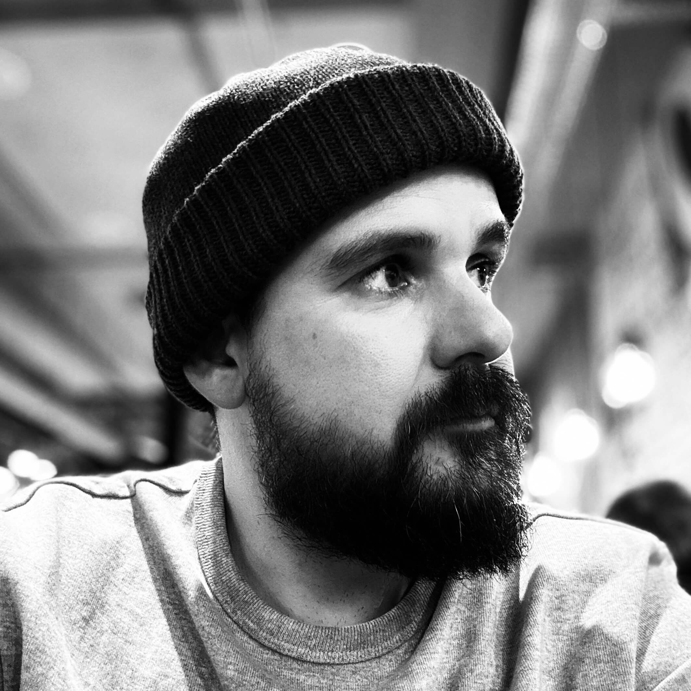

@ Roberto González
@@ Web: [rober.design](https://rober.design)
@@ Portfolio: [rober.design/works](https://rober.design/works)
@@ Email: [hi@rober.design](mailto:hi@rober.design)
# About me
Hello, my name is Rober and I have more than 15 years of experience as a designer, working on all types of projects, including specific expertise in designing for B2B SaaS products.
In recent years I've specialized in working with data and designing dashboards and visualizations for clients like Santander, El Corte Inglés, BBVA or Airbus. At the same time I have been leading design teams and managing projects financially and executively.
I've experience working in agile environments and knowledge of the development pipeline from my background as a developer.
# Skills
## User-Centered Design:
• Extensive experience in designing user-friendly, intuitive interfaces focused on solving user needs and enhancing product usability.
## End-to-End Product Design:
• Proven ability to lead the full design process, from research and ideation to prototyping, testing, and delivering high-fidelity designs.
## Cross-Functional Collaboration:
• Effective communication and collaboration with product managers, developers, and stakeholders to align design vision with business objectives.
## Interaction and Visual Design:
• Strong grasp of visual hierarchy, typography, and interaction principles to create compelling and visually appealing products.
## Prototyping & Tools:
• Proficient in design tools like Figma, with the ability to create interactive prototypes for user testing and feedback.
## Data Driven:
• Passionate about using user feedback and data to iterate on designs and improve product performance over time.
# Experience
## Principal Product Designer @ Fresh People 🍍
:: Remote
:: May. 2023 → Now
• Principal User Experience, Interaction and User Interface designer.
## Lead Product Designer @ Populate Tools
:: Remote
:: Nov. 2021 → May. 2023
• Lead Interaction and User Interface designer.
## Project Leader - Digital Product & IxD Designer @ NTT Data
:: Valladolid, Spain - Madrid, Spain - Remote
:: Mar. 2018 → Oct. 2021
• Experience Design Project Leader.
• Lead Interaction and User Interface designer.
• Data visualization design area expert.
• Design team coordination and project management.
## Partner / CTO / Senior UX / Web Designer @ Vital Innova
:: Valladolid, Spain - Remote
:: Jan. 2016 → Feb. 2018
• UX research, product branding, UI design and front-end development.
• Development team director.
## Lecturer @ MDB, Escuela de Negocios ESDEN
:: Valladolid, Spain
:: 2017
• Professor of the UX subject - Master in Digital Business.
## UX / Web Designer @ Intexdev
:: Cáceres, Spain
:: Nov. 2011 → Jan. 2016
• UX research, UI design and front-end development in high-traffic vertical web portals.
## Web Designer @ Run Software
:: Cáceres, Spain
:: Nov. 2004 → Nov. 2011
• UI design and front-end development for local business webpages.
